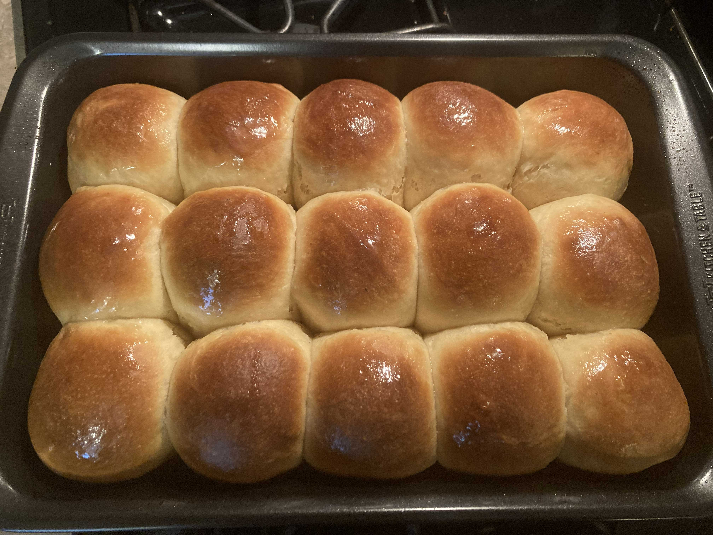
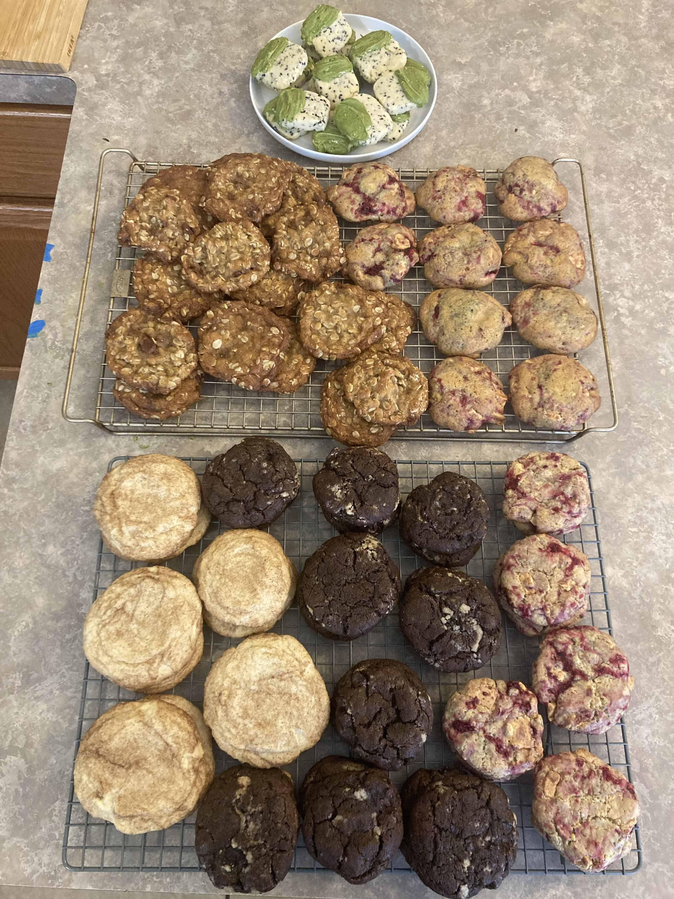
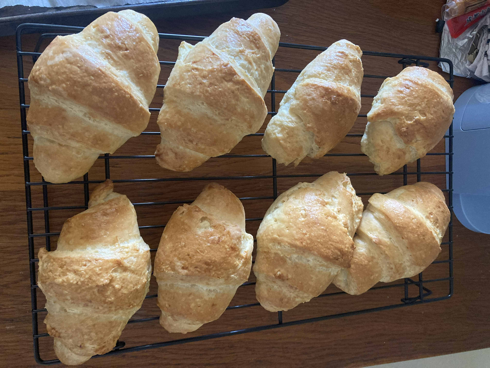
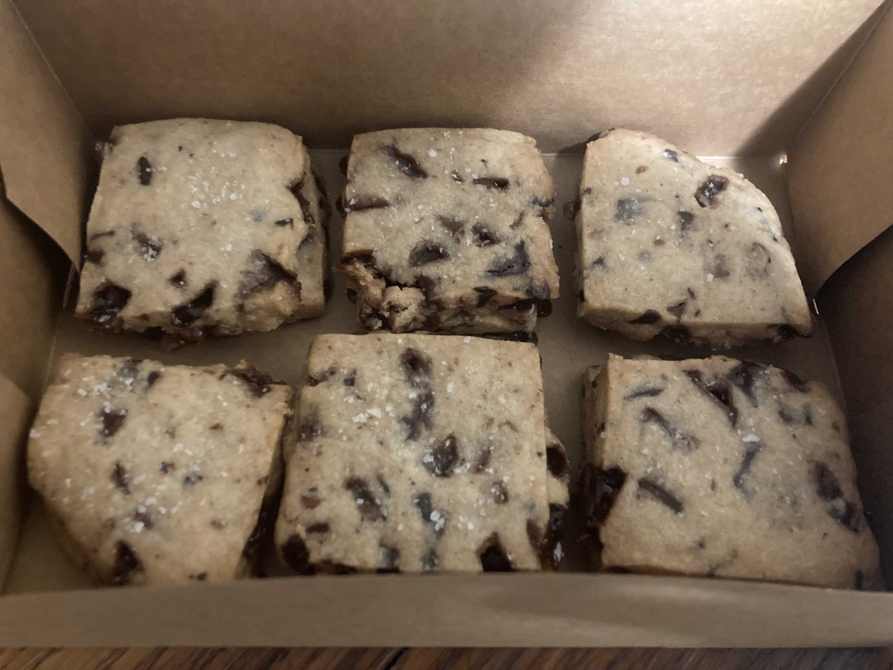

I'm a long time hobby baker (over 15 years strong!), and have been having a lot of fun making things in my very tiny and very much shared kitchen space. A kitchen that, through the luck of the draw, is very well equipped with baking supplies.
I appreciate any opportunity to share what I make with others, and that baking lets me make something real, delicious, and more-or-less screen free.
Pictured are a few recent bakes that I'm really proud of, either due to iterative success or the joy of trying something new. And a recipe for the shortbread cookies is at the bottom of the page!

Hawaiian style dinner rolls, Nov. 2024

Assortment of Christmas cookies, Dec. 2024

Croissants, Aug. 2026

Shortbread cookies, Oct. 2026
Recipe: Chocolate + Toffee Shortbread
Adapted from Alison Roman's Salted Butter and Chocolate Chunk shortbread, with technique adapted from Michelle Lopez's Hummingbird High blog.
Prep: 15 min + 1 hour chilling
Bake: 15-17 min at 350°F
Ingredients:
1 stick (113g) of butter, softened
1⁄4 cup (50g) granulated sugar
1⁄4 tsp Fiori di Sicilia + 1⁄4 tsp vanilla extract (or all vanilla)
1 1⁄4 cup (160g) flour
1 oz (~2.5 Tbsp or ~26g) sourdough powder (or replace with an equal amount of flour)
Pinch (1⁄8 tsp) of salt[note 1]
3 oz (~1⁄2 c or ~85g) chocolate chips + toffee pieces
Directions:
Place softened butter in a medium bowl, add sugar, and whisk until light and fluffy, for about 2 minutes. Add extract(s) and mix again.
Add flour, sourdough and salt to the bowl and stir using a spatula or spoon until partially mixed. Add in toffee and chocolate (I used 1 oz and 2 oz, respectively) and stir again until the flour is fully incorporated.
Line a baking tray with a silcone liner or parchment paper. Turn dough out onto the surface and press into a 1⁄4 inch tall rectangle; the dough is soft, I use a spatula. Cover and freeze for 1 hour or overnight.
When ready to bake, take cookies out of freezer. Use a sharp knife to cut the dough slab into desired cookie shape.[note 2]
Alternative ways to shape the dough include rolling it into a log to chill in a fridge and slice into rounds;
Or, flattening the dough as written, chilling in a fridge/freezer, and then using cookie cutters to cut out desired shapes.
Preheat oven to 350°F, and place cookie dough on a lined tray in freezer as the oven preheats. Bake from frozen for 15-17 minutes, or until golden brown on the edges.
Let cool for ~20 minutes and you're done!
[1] I first made this recipe using salted butter with additional salt in the dough, and would definitely up the salt to to 1⁄4 tsp if using unsalted butter.
[2] There are so many ways to make shortbread shapes happen! I just don't like sticky doughs, so the flatten and freeze technique works very well for me and makes neat squares and rectangles happen.